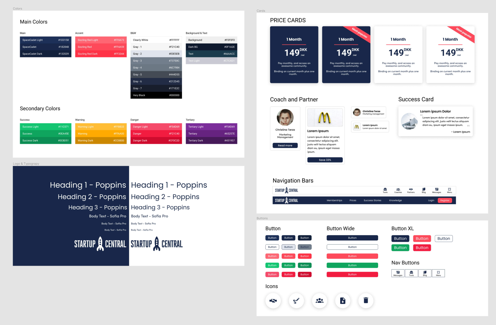

StartupCentral
Redesign
Role UI Designer
Context Website Redesign
Period 2022 February - 2022 April
Introduction
StartupCenter is a benefit club for entrepreneurs that focuses on client relationships and
partner deals with other firms. The premise of the company is to create an online social
platform where entrepreneurs can find help and information about starting and managing a
business no matter whether they just want to start, or they have already started the process
In this Project, we revamped the user experience and redesigned the UI, which is one of the
largest project at StartupCentral since the foundation.

The Problem
The dropoff rate on the website was high. Due to the low usage, we never prioritized improving on or building new features for the website.
The old landing page is outdated.
It has not gone through a redesign for over 2 years. The design language is not consistent through the website. The onld landing page shows only blue and white colors and there are no distinct buttons that would indicate where the user should click.
StartupCentral lacks a distinct color pattern
Startupcentral needs to establish a new company color for easier brand recognition and a full color-palette that goes with it. Establishing what colors should be used and where should be used will subconsciously tell the users where they can gather information.
The existing site’s visitor metrics could be improved
We want to drive our users to our main page, and we would like to keep them on different pages where they can clearly find the information what they are looking for
The Goal
Communicate StartupCentral’s value proposition
To give a clearer messaging. Show our users where and how they could get value from our product.
Drive customers to StartupCentral
To attract potential customers who wants to use StartupCentral to grow their business
A delightful, consistent consumer experience
To ensure a proper design system is in place to reduce technical debt, and give our consumers a better, consistent experience.
The Users
Before the designing process, we deep dive into getting to know the userbase. We also
conducted a series of customer interviews.
We focused on identifying who are the main users that use our product.
3 user archtypes, were defined, and mapped them to their respective place.
The Process
Early concepts
This is how the some of the early wireframes looked like. After revamping the home page the main focus was put on the coaches, the partners and the explanation page. The designs went through many iterations before the team decided on the final concept.
In the low-fidelity prototype I connected all of the screens involved into a primary user
flow. The user can choose the coach page, and from there he can go to the coaches' personal
pages.
The same can be said for the partners, as it is easy to navigate back and forth for
information.
Prototyping
In the low-fidelity prototype I connected all of the screens involved into a primary user
flow.
The user can choose the coach page, and from there he can go to the coaches' personal pages.
The same can be said for the partners, as it is easy to navigate back and forth for
information.
Design System
The company desperately needed a design system for easier implementations as the company strives to expand in the future. This new design system will help in the extension of the company
Moreover Startupcentral needed to establish a new company color for easier brand recognition and a full color-palette that goes with it.
The designs have went through at least 30 iterations per screen. It is due to several reasons: Change in business direction, shift in product roadmap or simply to improve the user experience.
Here is an early snippet of the established design system
Final Designs
Before and After
Before the redesign, there was a lack of focus on what, StartupCentral offers. The website
was cluttered some places, it was giving vague information and there was no clear indication
where the user can get meaningful information.
Here's a detailed walkthrough of what I improved post-testing
Home page update
The hero image has been changed to indicate a network of danish entrepreneurs as that is what the company wants to stand for.
After that as there was no indication for the user where to start or, where he could get
more information
about the product.
In the updated version of the site there is a clear userflow and explanation. The
first section gives a small intro, and then the sections following explain more and possibly
lead the user further on the page.
Reading on, the user gets to know about the prices of the service, furthermore a clear
indication is shown which price window is the most valuable as it is emphasized with a
highlight.
The "sizzling red" will always take the user to the register page and the "spacecadet blue"
button takes the user to get more information about the product.

Helper Pages
The individual helper pages did not have a certain layout. They were made up on the spot and everything came up was added to it; such as icons buttons etc.
On the new layout the helper pages have the same layout. In the hero section a small
indication of
what page the user is on, and a small info.
As the user scrolls down a brief introduction is on the left and a corrseponding image will
be on the right.
As the information on these pages can be long, after the first section, the text is going to
be in the middle
describing everything. These paragraphs can be sectioned, the links are indicated with
"shizzling red" color,
and all the bulletpoints as well.
Coaches / Partners page update
The coaches/partners page looked identical before the redesign. There was no distinction and
they were visually unappealing.
Through the redesign process, The users can see more coaches
at a glance, furthermore
the search feature is put on the left side, and is following the user eevn during scrolling.
The partners and coaches now are also distinguisheable. The partners site shows 3 columns,
with more detailed information plus
the benefits they provide.
The coaches card list shows 4 columns and an indication of the coaches' specialization.
Coach Page
The individual coach page was missing information sometimes, furthermore it was hard to read, thus providing an uneasy user experience
Company Page
While the company page was a better made in the original design, to keep the design
similarities through the site. The company page uses a 3 column design, Logo on the left
providing
all the information in the middle, and a signup quick access on the right.
As with the coach page, partners are also shown at the bottom of the page to keep the user
on the site.
Takeaways from the project
The target audiance was happy about the re-design. They could find the information a lot easier than before. They also commented that the site was visually pleasing furthermore easier to navigate than ever.
Laying the foundation
Recreating the main site is only the first step of a huge process and change at
StartupCentral.
As StartupCentral would like to establish a Social Media like network, laying the foundation
on the main site can partly determine the success of the network.
Establishing Brand identity
Creating a visual hierarchy and a color system can significantly improve brand identity. By using the original colors throughout multiple sites that are all connected to StartupCentral, the user subconsciously links them together, even without the indication of a logo.
What I learned
Adapt to changes
What seems to be a nice and okay design at first, might not be relevant in the future.
Adapt to the changing consumer behaviour
We needed to stay grounded and focused on the goal, but also account for changes to the product to match the changed behavior of customers.
Take it one phase at a time
We learned to break down complicated designs into small, manageable chunks. This eases development and handles bugs as we go along.